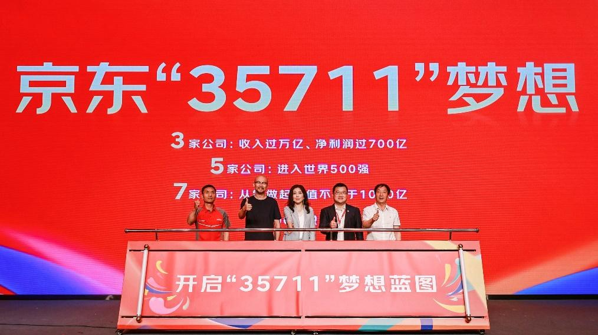

6月18日，在成立20周年之际，京东向公司56万名员工发布了全员信。
在信中，京东发布了未来20年的“35711”新目标：

△ 左起：京东快递小哥徐文义，京东老用户张淼，京东集团CEO许冉，中粮集团党组成员、
副总经理陈朗，山西静乐县任家村小学前校长任补义共同启动“35711”梦想蓝图
20年之后，京东能有3家收入过万亿元，净利润过700亿元的公司；5家进入世界500强的公司
；7家从零做起市值不低于1000亿元的上市公司；能为国家缴纳1000亿元税收；提供超过100万就业岗位。
通过回顾过往20年的发展历程，京东找出了实现这一宏伟目标的路径。20年前，“非典”疫情猝然来袭之时，
京东靠着几十名渠道经理在BBS评论区留言与邮局发货，开启了“线上购物初体验”的故事。
原本是应急之策，却展现出了更低的经营成本、更快的周转效率，也能让用户更便捷地挑选到更便宜的商品，
而这正是零售的本质。也就是从那时起，以成本、效率、体验为核心的经营理念基本确立并不断深化至今。
在下午举办的京东20年老友汇上，京东集团CEO许冉再次强调，这一最基础、最优秀、最简单，
也最行之有效的经营理念，不仅是京东过去成功的重要法宝，也将是京东赢得未来的基本保障。
从这一理念出发，许冉阐述了具体落实“35711”梦想的路线图。应对不确定性的未来，
京东将重点把握好三个方面：第一，聚焦主航道，贯彻下沉市场、技术服务、国际业务三大战略；第二
，恪守京东经营理念，持续优化管理体系和组织机制；第三，夯实企业价值底座，传承企业文化